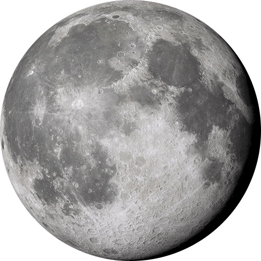
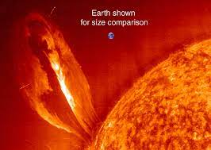

Structure
| Layer | Composition |
|---|---|
| Atmosphere | Solid silicate rock mostly basalt |
| Mantle | Solid silicate rock |
| Outer core | Liquid iron and nickel |
| Inner core | Dense solid iron and nickel |
Crust
Earth's crust, together with the uppermost parts of the mantle
forms the lithosphere. The lithosphere is broken into a series of
tectonic plates which 'float' on a more elastic part of the upper
mantle. The motion of these plates gives rise to earthquakes and
volcanism.
Mantle
The Earth's mantle is a rocky shell which accounts for 84% of the
planet's volume. The very uppermost regions of the mantle are the
most solid and are relatively rigid.
Outer core
The temperature difference within the outer core drives convection
currents, with hot liquid metals rising, cooling and then descending
back towards the hot inner core. These convection currents power the
Earth's magnetic field.
Inner core
Although the temperature in the inner core is thought to be about
the same as the surface of the Sun, the extreme pressure prevents it
from becoming liquid.
Moon

The Moon is Earth's only natural satellite. Next to the Sun, the Moon exerts the greatest influence on the Earth itself, most notably through its affect on Earth's tides.
Noticeable point

All of the planets, except for Earth, were named after Greek and Roman gods and goddesses. However, the name Earth is a Germanic word, which simply means “the ground.”